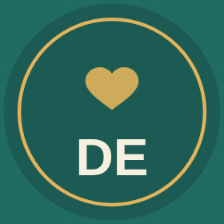

Início · A consulta
Como é a consulta: com calma e conversa.
Um tempo para ouvir a família, examinar a criança com cuidado e combinar o que fazer.

História
A conversa
O que trouxe você até aqui, como está a rotina da casa e o que mais preocupa. A criança também é ouvida, na idade dela.
Exame
A criança na frente
Peso, altura, exame de ponta a ponta e a avaliação do desenvolvimento, com calma e brincadeira quando precisa.
Orientações
O que fazer em casa
O que observar, o que fazer e quando voltar. Sem excesso de exames e sem pressa.
As orientações são escritas e conversadas, para caberem na rotina da casa.
Retorno
Acompanhar de perto
Os retornos são combinados conforme a idade e a queixa. O intervalo é definido em consulta.
Dúvidas frequentes
Perguntas comuns
O que levar?
A caderneta da criança, exames recentes e a lista de remédios em uso, se houver.
Quanto tempo dura?
A primeira consulta costuma ser mais longa que os retornos.
Agende
Pediatria e neonatologia, com calma desde o começo.
Rua Dr. Zuquim, 449, conjunto 63, Santana. Ligue para o consultório: (11) 98531-8066.